Site Report
Introduction
This website was created as part of my web development learning process. The main goal of this project was to understand the basics of HTML and CSS and to build a simple, responsive portfolio website. This site includes different pages such as Home, Projects, Contact, Video Demo, and Site Report.
Design and Layout
I used a simple and clean design with a consistent color theme across all pages. The header and footer are the same on every page to maintain consistency. I used Flexbox and CSS Grid to make the layout responsive so that the website works well on desktop, tablet, and mobile devices.
Pages and Features
The Home page introduces who I am. The Projects page displays my work using project cards. The Contact page includes a form with a mailto function. The Video Demo page shows a YouTube video embedded using an iframe. Each page is linked using a navigation menu.
Use of GitHub
I used GitHub to manage my project and control different versions of my code. GitHub helped me track changes, fix mistakes easily, and keep my files organized. It also allowed me to practice real-world version control, which is important for software development.
W3C Validator
I tested my HTML and CSS files using the W3C Validator to check for errors. This helped me ensure that my code follows web standards and works properly in different browsers. After fixing validation errors, the website became more reliable and clean.
 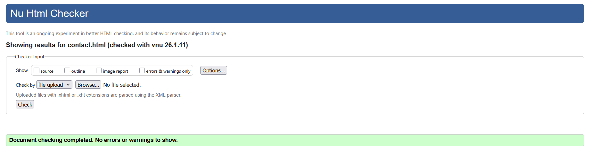
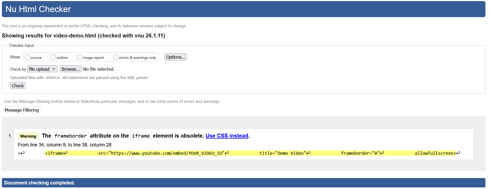
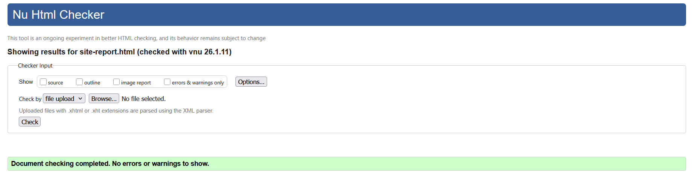
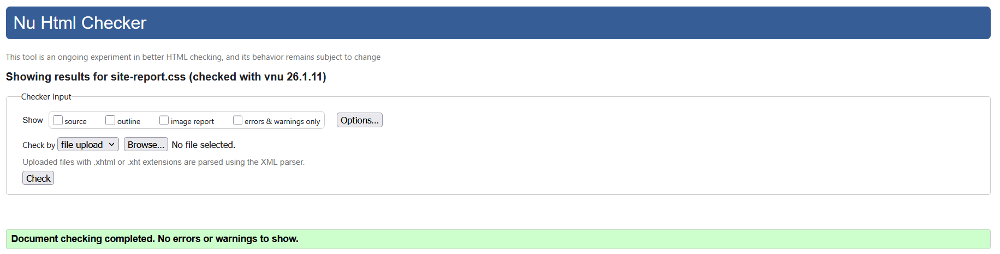
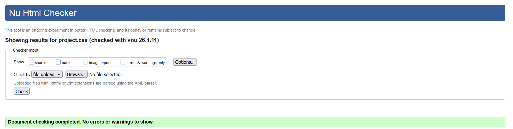
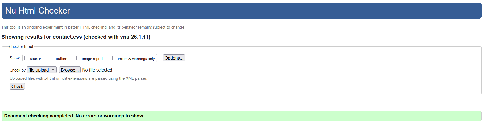
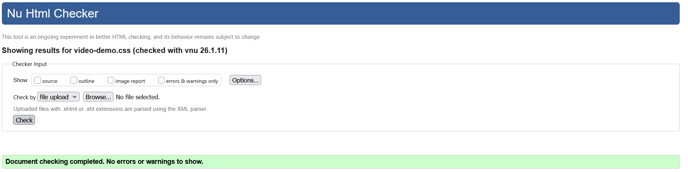
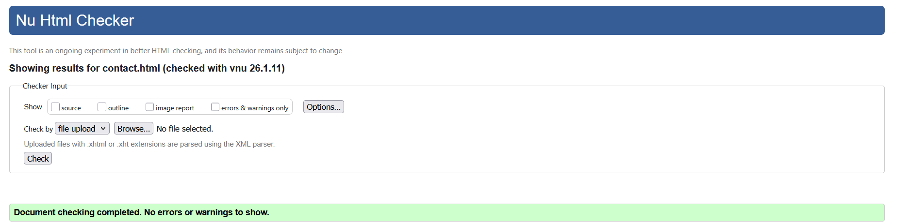
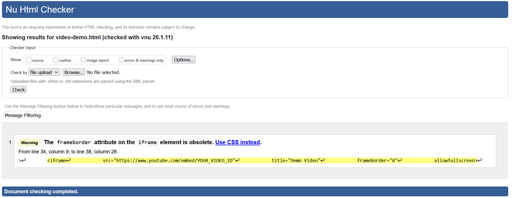
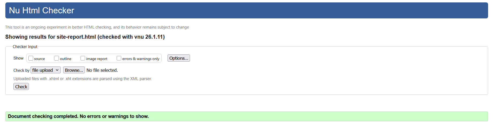
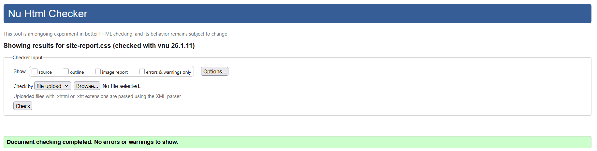
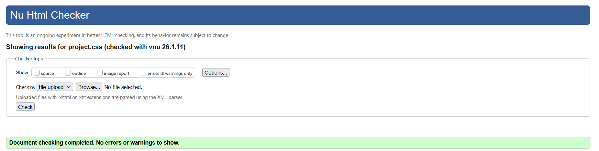
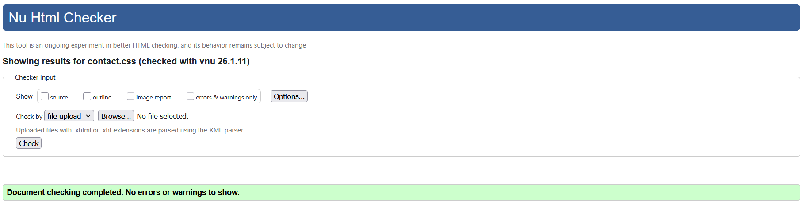
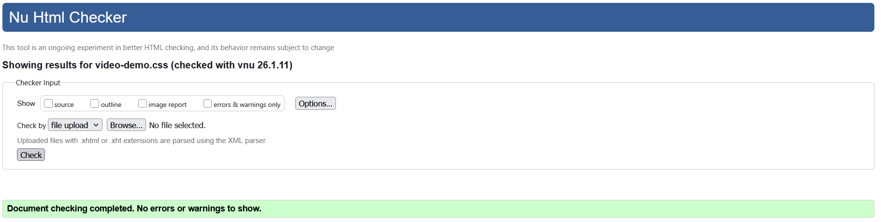
Challenges and Learning
At the beginning, I faced challenges with layout alignment and responsiveness. Understanding Flexbox and Grid took some time, but practicing helped me improve. I also learned how to structure files properly and reuse CSS styles.
Conclusion
This project helped me gain confidence in HTML and CSS. I learned how to build a complete multi-page website from scratch. This experience will help me in future web development projects and improve my skills step by step.